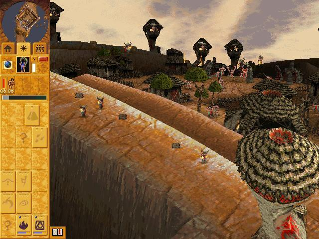
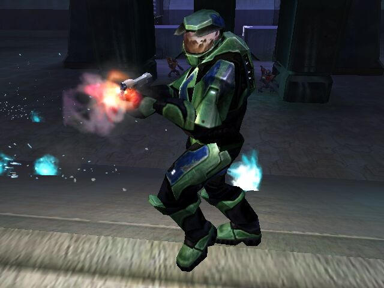
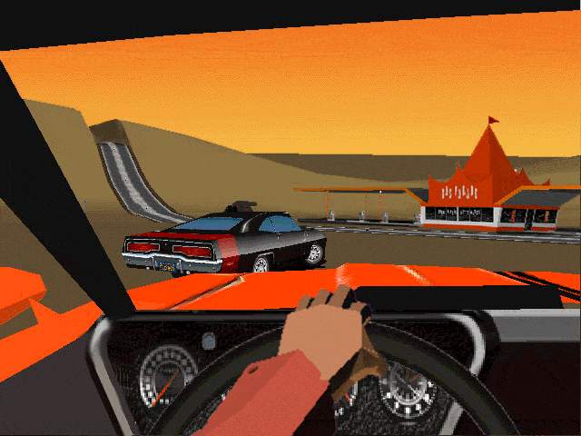
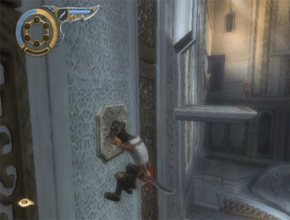

Vilain Game Designer ! Pas de biscuit pour toi ! VIII
L'article original est écrit par Ernest Adams publié par Gamasutra (septembre 2007).
L'auteur original n'est en aucun cas reponsable de la précision de cette traduction.
Une fois de plus, le moment est venu pour une nouvelle édition annuelle de Vilain Game Designer ! Pas de biscuit pour toi ! Depuis l'année dernière, j'ai reçu une bonne quantité de Twinkie Denial Conditions (NDT : littéralement « condition pour refuser un biscuit », à savoir à un game designer qui a mal fait son travail) de mes lecteurs, que je vous présente maintenant, pour votre éducation et surtout pour votre plaisir. De plus, j'ai finalement tenu une vieille promesse : mettre en place une base de données rassemblant tous les TDC, triés par catégorie. Il vous suffit de cliquer sur le lien pour vous retrouver sur mon site Internet.
Et c'est reparti ! Certains d'entre eux sont tellement énormes que j'aurai vraiment dû en parler des années plus tôt.
Niveaux obligatoires et terriblement atypiques
Celui-ci me met hors de moi, et apparemment je ne suis pas le seul. Joel Johnson écrit :
Je voudrais vous parler de ces passages affreusement irritants dans les jeux où les designers se sont dit « il faut que ça change ». Je n'ai rien contre les mini-jeux, mais quand le jeu est un FPS à l'exception de deux niveaux où il faut conduire une voiture, style jeu de course, ce n'est pas amusant du tout. C'est juste un remplissage qui sert à masquer le fait qu'il n'y a pas beaucoup de contenu dans le jeu principal. Parmi ces passages, on compte aussi les missions type infiltration obligatoires, assez répandues dans les FPS (si vous voulez faire un jeu d'infiltration, faites un fichu jeu d'infiltration), les sections de rail-shooting dans les FPS, les sections « jeux de rythme » dans les jeux du genre Grand Theft Auto, etc. Les mini-jeux optionnels sont amusants et peuvent apporter un changement de rythme bienvenu, mais le mot-clef ici, c'est optionnel. Un niveau où, pour avancer, le joueur doit utiliser des compétences complètement différentes de celles réclamées par le reste du jeu peut être affreusement énervant.
Bullfrog s'est souvent rendu coupable de ça – je me souviens de certains niveaux terriblement atypiques dans Dungeon Keeper, Magic Carpet et Populous : The Beginning. Ils étoffent le jeu, mais ils sont faits de telle sorte que tout ce que vous aviez appris auparavant devient inutile, ce qui est très pénible. Faites en sorte de les rendre optionnels.

Ne pas fournir d'information à court terme sur les objectifs
La première fois que ma femme s'est assise pour jouer au jeu d'aventure textuel Colossal Cave, elle a pu lire ces mots d'introduction :
Vous êtes au bout d'une route devant un petit bâtiment de brique. Autour de vous, c'est la forêt. Un petit ruisseau coule hors du bâtiment jusqu'à un ravin.
Et puis plus rien. « Je suis censée faire quoi ? » demanda-t-elle à l'homme qui lui présentait le jeu. « Ce que vous voulez ! » lui répondit-il fièrement (c'était en 1979, et les jeux avec des parseurs étaient tout nouveaux). Mais elle ne savait pas ce qu'elle voulait faire. Le jeu ne lui donnait aucun but particulier à accomplir, et nous avons vécu ainsi avec le même TDC depuis près de 30 ans – et ça arrive encore, croyez-le ou non. Andrew Harrison écrit pour nous dire :
Quand je jouais à Metal Arms : Glitch in the system (sur PS2), il m'arrivait parfois de vouloir charger une partie à partir d'un checkpoint qui ne donnait aucune indication claire sur ce que j'étais censé faire : pas d'information dans le menu pause, personne à qui parler, pas moyen de revenir à une cinématique explicative antérieure, pas même un écho sur mon radar. Souvent, je ne faisais que me promener jusqu'à ce que je trouve des ennemis pour ensuite les tuer, en espérant que mon objectif était de les éliminer. Si le vrai but était de détruire des pièces d'une machine ou d'appuyer sur un bouton, je pouvais potentiellement errer pendant longtemps avant de mettre le doigt dessus. Je pense que les designers devraient essayer d'éviter ce genre de situation.
Et il a parfaitement raison, ils devraient ; en fait, c'est une des règles de game design énoncées par Noah Falstein : fournir des informations à court terme sur les objectifs. Et s'il charge une partie sauvegardée, il faut donner au joueur un récapitulatif, un résumé ou quelque chose d'autre qui lui permette de comprendre ce qu'il est censé faire.
Stratégies dominantes
L'expression « stratégie dominante » est un terme de la théorie mathématique des jeux. Elle se réfère à un état de fait dans laquelle un certain mode d'action (une stratégie) donne toujours le meilleur résultat indépendamment des circonstances. Une stratégie dominante ne garantie pas forcément la victoire, mais c'est toujours le meilleur choix possible. En conséquence, il n'y a aucune raison d'utiliser une stratégie différente. Un jeu avec une stratégie dominante est fautif, car il n'offre pas de véritables décisions au joueur.
Les stratégies dominantes ne se cantonnent pas au domaine des mathématiques et on en trouve aussi dans les jeux vidéo. Joel Johnson nous écrit :
La plupart des jeux de nos jours, qu'il s'agisse de jeux d'action, d'aventure, de stratégie ou autre, donne au joueur une grande variété d'options ou de méthodes pour attaquer des unités ennemis. Un des gros problèmes que j'ai remarqués est qu'il n'est pas rare que la majorité de ces options (mouvements spéciaux, sorts, unités, etc.) soit complètement inutile, parce qu'une seule méthode surpasse toutes les autres. Par exemple, prenons Halo. Sniper avec le pistolet était la seule façon valable de jouer, du moins pour moi et pour beaucoup de gens avec qui j'ai joué. Il y a peu d’intérêt selon moi à utiliser d'autres méthodes d'attaque quand je peux tuer quelqu'un à l'autre bout de l'aire de jeu rapidement et facilement. Je m'amusais beaucoup plus à sniper au pistolet que les autres, qui eux utilisaient un fusil de sniper. Il y avait une certaine ironie là-dedans. En tout cas, Bungie [NDT : les développeurs de Halo] a bien fait son travail et a sévèrement revu à la baisse le pistolet pour Halo 2. J'étais déçu au départ, mais le jeu était devenu beaucoup plus intéressant à jouer.
Ceci est un parfait exemple du problème. Choisir le pistolet est une stratégie dominante, ou presque. Parfois, les stratégies dominantes se retrouvent dans les jeux parce qu'ils n'ont pas assez été testés ; parfois parce que le concepteur était tellement fan d'une stratégie particulière qu'il ne pouvait pas se résoudre à l'affaiblir, au détriment de l'équilibre du jeu. Résultat des courses : il doit y avoir des avantages et des inconvénients dans toutes les stratégies possibles, les rendant plus ou moins intéressantes selon la situation.

Amnésie de début de partie
Passons de l'équilibrage de jeux à la question de la narration. Andrew Stuart nous parle des jeux qui commencent par quelque chose du genre :
« Vous vous réveillez dans un endroit étrange. Vous ne savez pas qui vous êtes ni comment vous êtes arrivé ici. Vous êtes amnésique et votre objectif est de trouver qui vous êtes et ce que vous faites ici. » C'est dur à avaler, mais on dirait que tous les jeux du genre me mettent dans la peau d'un amnésique qui se réveille. C'est normal après une nuit arrosée, mais dans chaque jeu ? Ça suffit !
Il y a quelques années, j'avais mis le doigt sur ce problème de l'amnésie au cours d'une conférence à la Game Developers Conference. Le problème se pose parce que le joueur ne sait rien à propos de l'univers du jeu quand il commence la partie. Dans beaucoup de jeux d'aventure, la première chose qu'il doit faire est de passer en revue tous les tiroirs dans ce qui est supposé être son propre appartement pour voir ce qu'il y a dedans – ce qui est proprement ridicule. Un personnage dans une vraie histoire n'a pas à faire ça, parce que le personnage appartient déjà à l'univers du jeu. Ainsi, dans l'industrie du jeu vidéo, nous faisons beaucoup de jeux dans lesquels le personnage du joueur est amnésique afin de justifier l'ignorance même du joueur.
C'est une solution bas-de-gamme au problème. Les spectateurs d'un film ne connaissent pas l'univers du film non plus, c'est pourquoi les introductions sont soigneusement élaborées afin d'accompagner rapidement le public vers le cœur du film. De temps en temps, quand la situation est vraiment complexe, les films recourent à la narration en voix off, mais ce n'est pas nécessaire la plupart du temps. Examinons l'échange de dialogue suivant au début du premier épisode de The Sandbaggers, le meilleur feuilleton d'espionnage jamais créé :
Secrétaire : Wellingham a appelé. Il veut vous voir.
Burnside [avec sévérité] : Vous voulez dire le sous-secrétaire permanent du Foreign Office ?
Secrétaire [avec sévérité également] : Je veux dire votre beau-père.
Burnside : Ex-beau-père.
En quatre lignes, sans même l'avoir rencontré, nous avons fait la connaissance de Wellingham, son travail et sa relation avec le personnage principal de la série, Burnside. Nous avons également appris que Burnside a divorcé, mais il a encore des liens professionnels avec son ancien beau-père. Finalement, nous remarquons que Burnside est un peu formel sur les noms (ce n'était pas rare en Grande-Bretagne en 1978) et que sa secrétaire lui tient tête. Ça fait beaucoup d'informations en dix secondes de dialogue, et c'est infiniment plus brillant que les explications interminables d'un quelconque mentor de jeu vidéo. Nous devons étudier ces introductions de films ou de séries afin d'apprendre comment les faire nous aussi. Et tant qu'on y est, plus de personnage-joueur amnésique.
Conditions de victoire mal vérifiées
Interstate '76 était un jeu de voitures proposant d'utiliser un large panel d'armes complètement loufoques. L'un des niveaux avait un problème assez cocasse, mais ennuyeux. Le jeu vous indiquait de trouver le moyen de sortir d'une zone fermée entourée par un mur en béton. La « bonne » solution était de trouver une rampe cachée, de grimper dessus et de voler par-dessus le mur – ce qui vous faisait atterrir dans une fosse, mais c'était essentiel pour la suite de l'histoire. Cependant, certains joueurs habiles ont réalisé qu'il pouvaient poser une mine par terre près du mur, puis foncer dessus à toute vitesse. L'explosion propulsait la voiture en l'air et, avec l'impulsion, la faisait voler par-dessus le mur. Si la voiture était assez solide, elle se fracassait au sol mais n'explosait pas. Ces joueurs avaient rempli la condition de victoire, mais le jeu ne le reconnaissait pas, et le niveau ne se finissait jamais. Le jeu testait seulement l'utilisation de la rampe et pas la présence de la voiture à l'extérieur du mur.
Quand vous dites à un joueur de faire quelque chose et que vous vérifiez qu'il l'a fait, vous devez vérifier qu'il a fait ce que vous lui avez demandé de faire, et non pas ce que vous avez voulu qu'il fasse. Dans les jeux récents avec des environnements complexes (par exemple les Grand Theft Auto), il y a de fortes chances que le joueur réussisse à remplir la mission d'une façon que le game designer n'aurait pas imaginée — et le joueur doit être récompensé pour ça.

Toujours sur le même thème, venons-en aux…
Vérifications illogiques des conditions de victoire
Éviter les conditions de victoires incorrects ne signifie pas que vous devez chercher la petite bête sur des détails précis. Si le joueur a effectué une action qui comporte naturellement une condition de victoire, il doit également être récompensé en conséquence. Andy Lundell dit :
C'est déjà pénible quand les objectifs de missions sont illogiques, mais quand vous commencez à pénaliser le joueur pour avoir pris une décision logique, là, ça va trop loin. On voit souvent ça dans les FPS et parfois dans les RTS en solo. Le meilleur exemple en est Red Faction. Il y avait une mission qui vous disait que vous deviez détruire un ordinateur spécifique dans une station spatiale. Une fois que vous y êtes arrivé, on vous disait que vous deviez faire sauter la station spatiale tout entière et vous échapper dans une capsule de sauvetage. J'ai donc, en toute logique, supposé que je pouvais juste faire sauter la station spatiale sans me soucier d'aller détruire l'ordinateur spécifique. J'ai fait sauter la station, plongé dans une capsule de sauvetage et… et… le jeu a planté. Nous étions supposé faire sauter l'ordinateur et ensuite faire sauter la station (il n'y avait pas d'explication sur la nécessité de faire cet effort). Apparemment, le jeu ne pouvait gérer le fait que le niveau soit terminé sans que l'ordinateur ait spécifiquement été détruit, je ne pouvais donc plus que revenir au menu principal. Tout ça parce que j'ai tenté de faire quelque chose d'intelligent au lieu de faire bêtement ce que les level designers voulait me faire faire !
Un petit conseil, chers level designers : si une condition de victoire (faire sauter la station) inclut naturellement une autre condition (faire sauter l'ordinateur), il n'y a aucunement besoin de vérifier la seconde – et ce genre de fautes risquerait de vous faire priver de biscuit.
Perdre le contrôle de la caméra au mauvais moment
Depuis l'arrivée de la 3D, nous avons dû travailler beaucoup plus pour modéliser des mondes, en particulier dans les jeux d'action. Avec les scrollings 2D (horizontal ou vertical) et les vues isométrique, la vie était bien plus simple. Les perspectives 3D fixes à la troisième ou à la première personne ne sont pas complexes non plus, mais toutes deux ont leurs limites (que se passe-t-il dans les jeux à la troisième personne si l'avatar du joueur est dos au mur ?). De nos jours, nous avons fait beaucoup d'efforts pour créer des caméras intelligentes à la Ico et nous n'avons pas toujours bien fait les choses. Loren Schmidt nous écrit :
Vous jouez à un jeu de plateforme à la troisième personne. Vous courez le long d'un couloir et devant vous, une grande fosse remplie de pics que vous pouvez tout juste passer en un seul saut… et soudain, la caméra se retourne à 180 degrés : évidemment, vous ratez votre timing et votre personnage impuissant plonge vers une mort inéluctable.
C'est encore pire lorsque dans le même temps, on passe d'une caméra contrôlable à une caméra fixe, comme on peut le voir dans les deux derniers Prince of Persia. La plupart de ces jeux se jouent avec une caméra que le joueur peut contrôler, mais de temps en temps, la caméra saute tout à coup vers une position prédéfinie (parfois mal placée). C'est tout particulièrement fatal lors des séquences de combat ou de saut au-dessus de précipices mortels.
Je comprends le but visé ici – juste avant une séquence d'action, le game designer a souvent besoin de verrouiller la caméra de manière à garantir au joueur une vision claire de ce qui se passe et à bien définir la façon dont les commandes vont faire bouger le personnage à l'écran. Mais changer brusquement de point de vue pendant que le joueur saute ou se bat pour sa vie va le gêner à coup sûr. Ne faites pas ça ! Il vaut mieux laisser le contrôle de la caméra au joueur, même si ce n'est pas l'idéal, plutôt que de le désorienter en changeant subitement de perspective sans crier gare.

C'est tout pour cette année. Curieusement, je n'ai pas reçu de grosses plaintes au sujet des menus de configuration (une source d'irritation constante). Une personne m'a tout de même écrit pour se plaindre des listes de sauvegardes non-triées ou ordonnées de manière si peu commode qu'il faut fouiller pour trouver sa sauvegarde la plus récente ; même si je reconnais que c'est une nuisance, je me dis que ce n'est pas assez grave pour justifier un refus de biscuits.
Comme toujours, je veux entendre vos réclamations ! Jetez un œil à la No Twinkie Database pour voir si j'en ai déjà parlé, et si ce n'est pas le cas, envoyez-moi un mail à notwinkie@designersnotebook.com (NDT : en anglais) et faites-le moi savoir !
Ajouter un commentaire
Commentaires

Une petite cinématique. Par exemple dans pokemon, en sortant de sa maison, le personnage peut monologuer "bon, il serait temps d'aller chez le professeur", et il nous y amène.
Ou un monologue, ou un déplacement de la caméra.
Ca donne de la personnalité à l'avatar mais ça enlève du contrôle au joueur.
Par rapport aux PJ amnésiques, le soucis me semble plus dans des informations type localisation des choses que dans les informations de l'univers. Certes, en quatre répliques, on peut savoir facilement qui est tel personnage… Mais on fait comment pour rendre crédible le fait que notre personnage qui vit dans cette ville depuis 15 ans doivent faire cinq fois le tour des pâtés de maison disponibles pour trouver la boulangerie ?
On a entre autre ce problème dans Final Fantasy VII, la première fois qu'on revient dans la ville de naissance du héros et que tu ne connais rien, tu sais pas où est l'auberge, ta maison et celle de Tifa. C'était le cas aussi dans pokemon bleu/rouge/jaune où on te demandait de te rendre chez les professeurs et que tu devais faire toutes les maisons pour trouver le laboratoire…